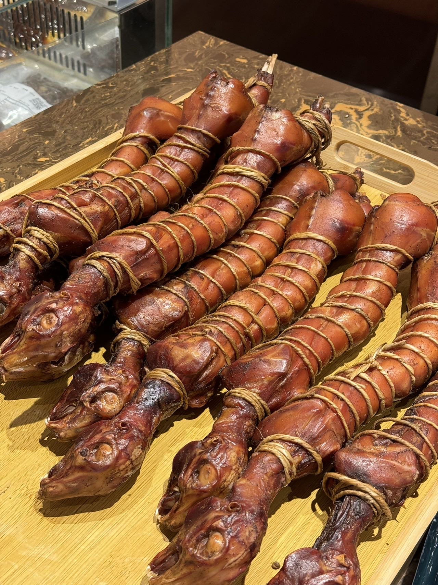
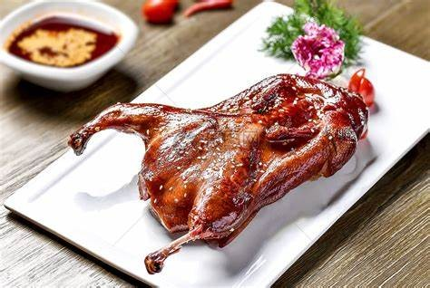
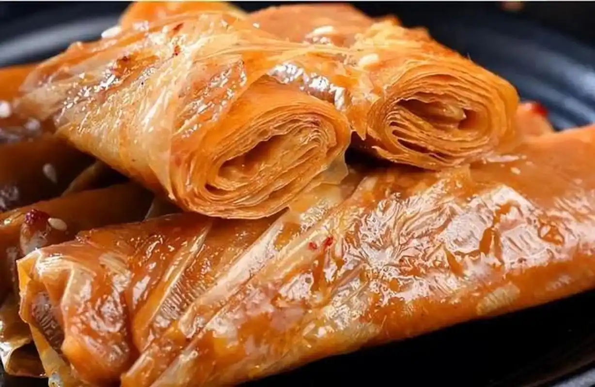
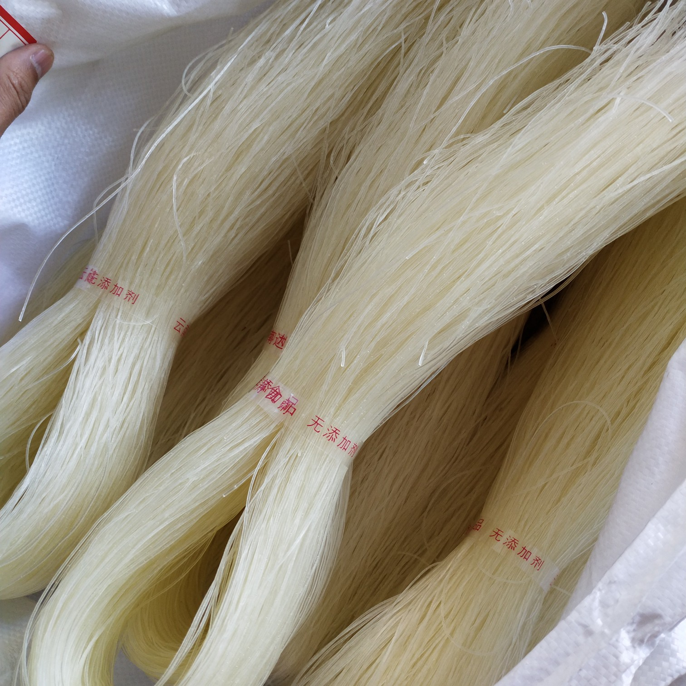
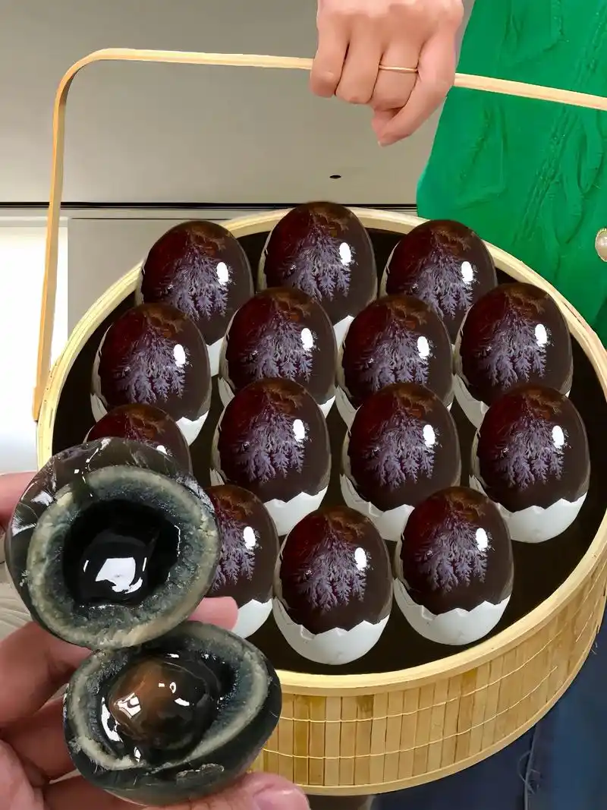
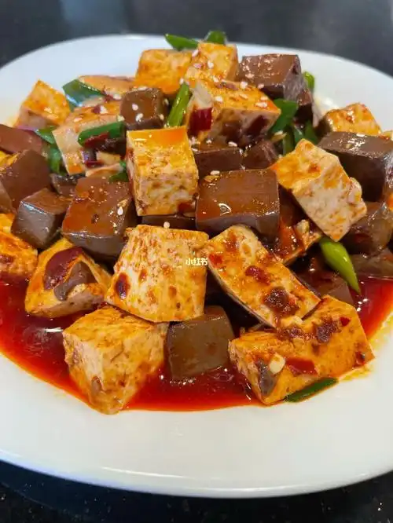
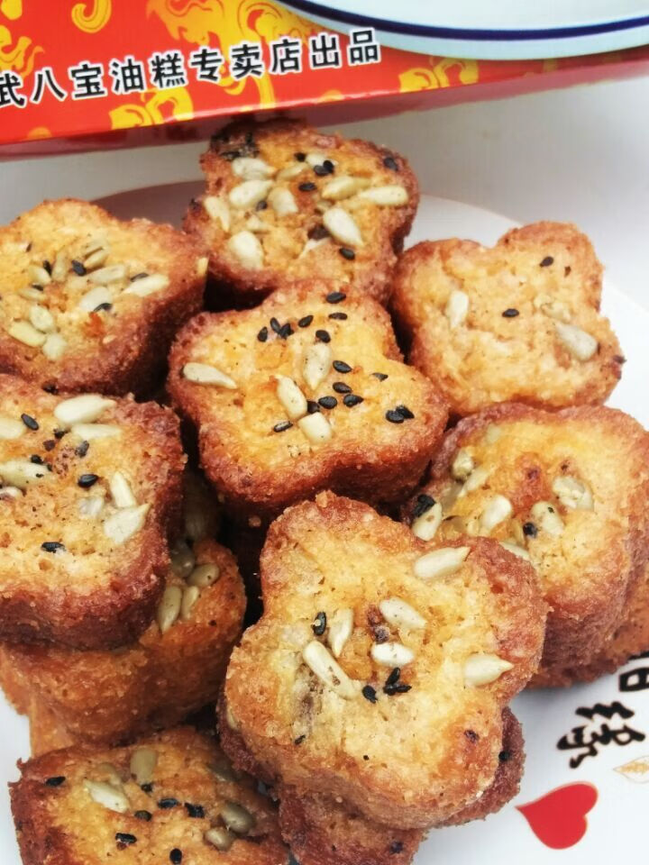

德阳特色美食

德阳缠丝兔
德阳缠丝兔是德阳地区的传统名吃，选用优质兔肉，经腌制、缠丝等多道工序制作而成。兔肉肉质鲜嫩，咸香可口，具有浓郁的地方风味。

什邡板鸭
什邡板鸭以其独特的制作工艺闻名，鸭子经过精心挑选、腌制、晾晒等步骤。成品外皮金黄酥脆，鸭肉紧实有嚼劲，味道鲜美。
中江挂面
中江挂面是中江县的特产美食，制作工艺精细。面条细如发丝，入口爽滑，口感筋道，配上鲜美的汤汁，别有一番风味。

罗江豆鸡
罗江豆鸡是德阳罗江区的特色美食，以黄豆为主要原料，经多道精细工序加工而成。其口感细腻，豆香浓郁，是一道营养丰富的素菜佳品。

广汉缠丝粉
广汉缠丝粉是广汉地区的传统小吃，粉条细如发丝，口感爽滑有弹性。配上特制的调料，味道鲜美，酸辣可口，深受当地人和游客喜爱。

绵竹松花蛋
绵竹松花蛋是绵竹的特产美食，制作工艺独特。其蛋白晶莹剔透，松花清晰可见，蛋黄呈墨绿色，口感鲜美，具有独特的风味。

什邡红白豆腐
什邡红白豆腐是什邡红白镇的特色美食，分为红豆腐和白豆腐两种。红豆腐色泽红润，味道香辣；白豆腐口感鲜嫩，豆香十足，各具特色。

中江八宝油糕
中江八宝油糕是中江县的传统糕点，选用糯米、核桃仁、花生仁等多种原料制成。口感软糯，甜而不腻，香气扑鼻，是一道备受欢迎的甜品。